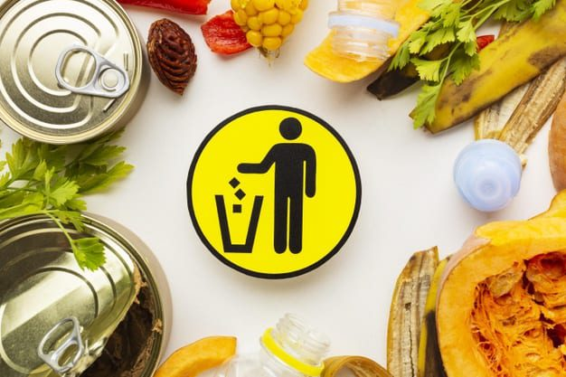

Preguntas esenciales

1¿Cómo se puede reducir el consumo de agua?
Para empezar,”En un planeta en el que la escasez de agua afecta a más del 40 % de la población mundial, reducir el gasto innecesario de agua es imprescindible para cumplir con el sexto de los Objetivos de Desarrollo Sostenible”.(sostenibilidad para todos,2016).A partir de lo leído nos podemos dar cuenta que es necesario tomar en cuenta algunas medidas para reducir el consumo de agua algunas de estas son: reparar cualquier tipo de fuga de agua, para ejemplificar se puede decir que una cisterna que tiene algún tipo de fuga de agua pierde 200000 litro de agua en el año. No dejar de correr el agua mientras te duchas , lavas las manos o te lavas los dientes. Tomar duchas breves.
2¿De qué manera afecta el impacto ambiental al consumo de alimentos?
El cambio climático en la tierra genera una cuarta parte del total de emisiones de gases de efecto invernadero mediante la agricultura, la ganadería y la silvicultura. La mitad de las emisiones se deben a los cambios de uso del suelo: la deforestación para ganar terreno para la agricultura, o incluso la degradación de bosques tropicales, convierten a estos ecosistemas en una fuente neta de emisiones.
3¿Qué genera el desperdicio de alimentos?
El desperdicio de alimentos genera a su vez el desperdicio de los recursos utilizados en la producción, como puede ser la tierra, el agua, energía u otros insumos, esto significa que producir comida que va a ser desperdiciada genera emisiones innecesarias de CO2 que contribuyen directamente al calentamiento global y cambio climático.
Desafio
Donación de alimentos antes de su periodo de vencimiento o caducidad a hogares.
Para comenzar, según la FAO(organización de las naciones unidas para la alimentación y la agricultura) 690 millones de personas pasan hambre en el año 2019, también la FAO agregó que 300 millones de personas no pueden pagar una dieta saludable, además de acuerdo con la ONU, se estima que entre el 8 y el 10% de las emisiones globales de gases de efecto invernadero están asociadas con comida que no se consume. Así a partir del problema señalado anteriormente, queremos proponer un desafío para mejorar esta situación la cual consiste en darle un uso a aquellos alimentos que están en el límite de tiempo de caducidad para donarlos a hogares, así no solo ayudamos a evitar el desperdicio de alimentos sino que también iremos en ayuda de otras personas. de esta forma cumpliriamos nuestro objetivo de fomentar el consumo responsable de alimentos.
Preguntas Guia
-¿Cuántos alimentos son desechados en los supermercados por sobrepasar la fecha de expiración en Santiago?
-¿Cuánto dinero se pierde por los alimentos desechados?
-¿Cuántos hogares hay en Santiago?
Actividades Guia
-Investigar la cantidad de desechos de comida que se produce en los supermercados.
-Investigar la cantidad de dinero que se pierde por los alimentos desechados.
-Buscar la cantidad de hogares en Santiago.
-Ver qué planes existen para reducir el desperdicio de alimentos.
-Averiguar qué alternativas existen actualmente para solucionar el problema.
Reursos Guia
-Desde el centro de estudios “Idea País” presentaron el estudio “Pérdida y desperdicio de alimentos en Chile”, donde también exponen datos sobre esta realidad. Según el estudio, un 35% de los chilenos desecha entre 0 y 5.000 pesos de alimentos, 31,8% entre 6.000 y 10.000 y un 24,8% desecha entre 11.000 y 20.000 pesos.
-Un 33.2% de los chilenos desechan más de 11.000 pesos mensuales en comida. Incluso un 3,6% desecha más de 30.000 pesos al mes.
-1300 millones de toneladas de alimento útil son eliminadas anualmente en todo el mundo. En Chile, si bien no se ha establecido una cifra exacta en toneladas de alimentos desechados, un estudio de la Universidad de Talca, determinó que la práctica de botar alimentos es considerada como normal por los chilenos e incluso eliminamos alimentos sellados. De hecho, el estudio “Cuánto alimento desechan los chilenos” señala que el 95% de las personas piensa que el botar comida acumulada en el refrigerador es una práctica normal.
-La huella de carbono por alimentos desperdiciados (8% de emisiones globales), el desaprovechamiento de suelo (30% de superficie agrícola) y el despilfarro de recursos hídricos (250 km3), causados por el manejo deficiente de residuos alimentarios dañan al país. Chile está afectado por la desertificación (22%), la degradación de suelos (80%) y la sequía (72%). Estos problemas afectan a 65% de la población del país(emol,2016)